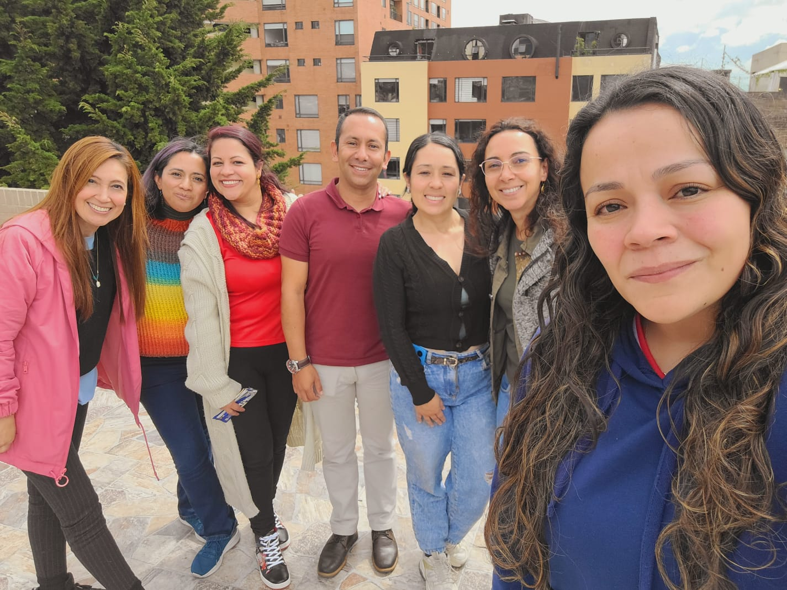
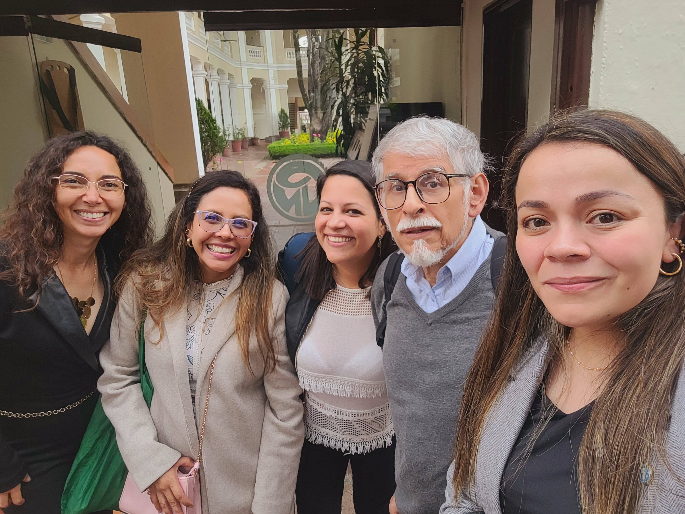
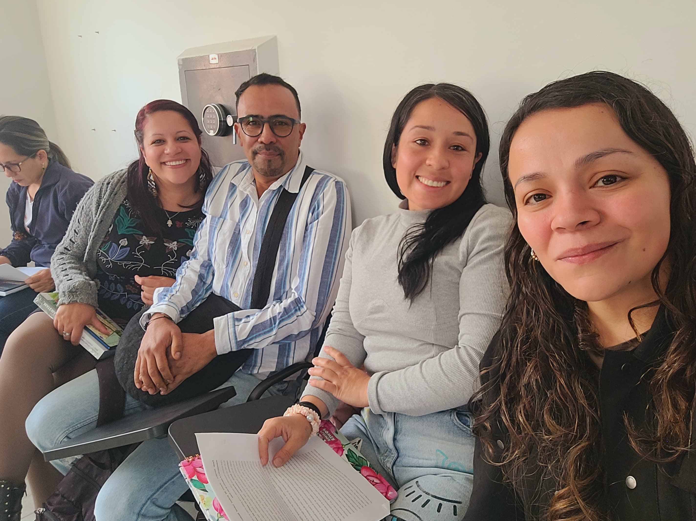
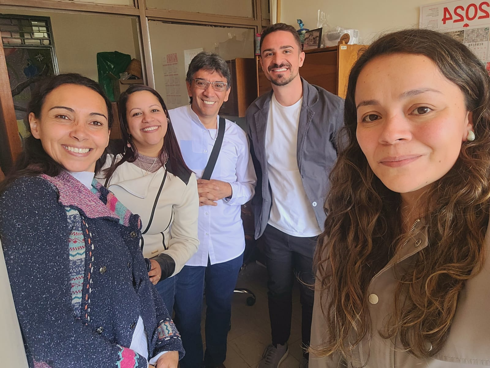
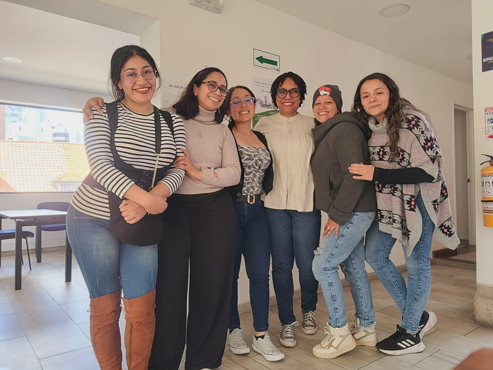
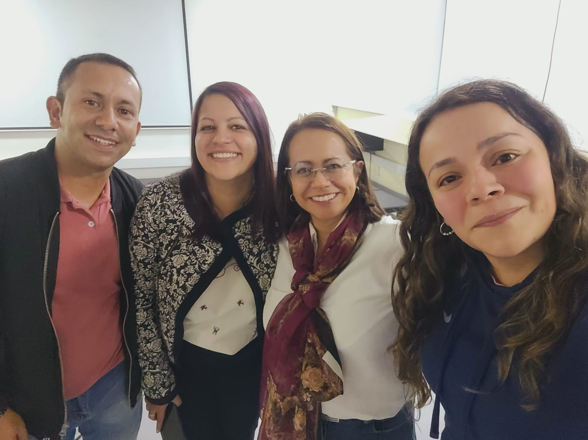
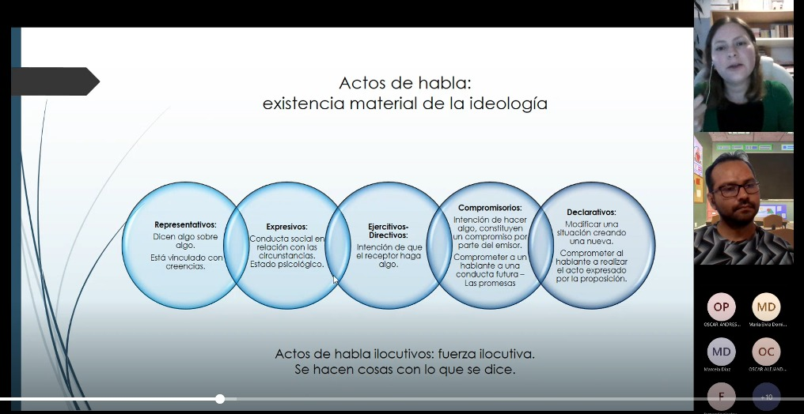
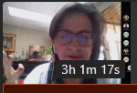
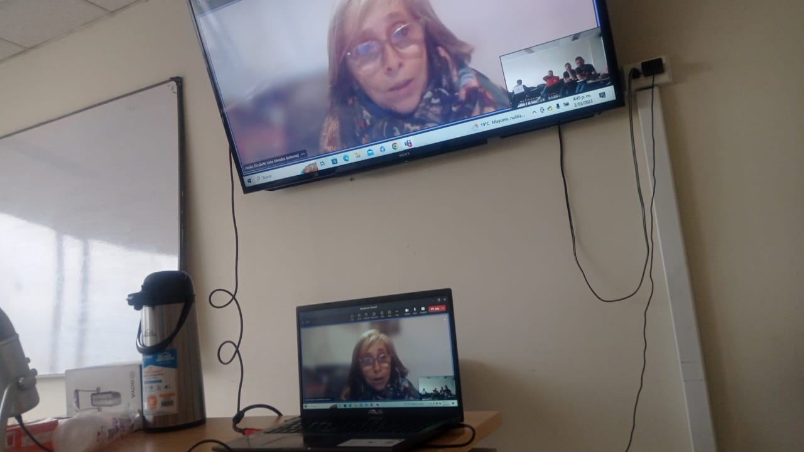

¿Quiénes somos?
Conoce el origen y propósito de nuestro colectivo
El Colectivo Narrativas, Crítica y Educación Matemática nace en el año 2020, liderado por las profesoras Claudia Salazar Amaya y Elizabeth Torres Puentes de la Universidad Pedagógica Nacional (Colombia).
Esta iniciativa surge a partir de sus experiencias investigativas como formadoras de profesores de matemáticas, con el propósito de reflexionar críticamente sobre las prácticas educativas y la investigación en educación matemática desde una perspectiva narrativa.

Producción Académica
Publicaciones y trayectoria investigativa de nuestras líderes
Elizabeth Torres Puentes
Claudia Salazar Amaya
Proyectos de Investigación
Conoce los proyectos liderados por el colectivo
Identidades narrativas de profesores de matemáticas vinculados a programas de formación
Institución: Universidad Pedagógica Nacional
Código: DMA-608-22
Año: 2022

Seminarios Doctorales
Espacios de formación y reflexión académica
Perspectiva Narrativa en educación. Aportes y posibilidades
Doctorado interinstitucional en Educación- UPN - Seminario de educación y pedagogía
Justificación del seminario: Este seminario propone el estudio de elementos teóricos y metodológicos que permiten comprender los aportes y posibilidades de la perspectiva narrativa en educación. En la dimensión investigativa, reconocemos que hoy tiene lugar una expansión de las perspectivas de la investigación social y educativa con el fin de aproximarse a la experiencia vital de los sujetos.
Una perspectiva narrativa en investigación invita al retorno al sujeto y a la construcción de narrativas de manera polifónica desde epistemologías y metodologías con rostro humano. La investigación desde esta perspectiva pretende superar la dicotomía entre lo subjetivo y lo institucional.
En la dimensión pedagógica, el vínculo entre conocimiento y práctica pedagógica solo es posible a través de la narración. Para McEwan, una explicación hermenéutica del raciocinio práctico disuelve el dualismo entre teoría y práctica. La narrativa trata de hechos, teorías y sueños desde la perspectiva de la vida de alguien.
Implicaciones Éticas: El seminario se hace relevante por la posibilidad que ofrece para discutir las implicaciones éticas que supone la investigación narrativa, pues en ella los participantes quedan expuestos, pasando del plano íntimo a una exposición pública, poniendo en juego su subjetividad.


Narrativas, Escuela, Experiencia e Investigación
Doctorado interinstitucional en Educación- UPN - Seminario de educación y pedagogía
Primer núcleo (Narrativas): Refiere a la narrativa como generadora de conocimiento y comprensión de fenómenos a los que no podríamos aproximarnos a partir de otros modos de indagación. Promueve la idea de que la experiencia de los sujetos permite interpretar el mundo y concretar estos modelos generales.
Segundo núcleo (Escuela): Pretende reconocer la importancia de la narrativa en la configuración de identidades de los protagonistas de la escuela; para el caso de los profesores, el papel de la narración en su formación inicial y en sus múltiples refiguraciones a lo largo de su experiencia.
Tercer núcleo (Experiencia): Asumimos a Larrosa para plantear la experiencia como "eso que me pasa", como acontecer de algo, que es significativo para la persona a la que le acontece. Se aborda la relación experiencia, vida y cuerpo y el papel de la mediación biográfica.
Cuarto núcleo (Investigación): Supone pensar la posición ética del investigador, considerada como relación paritaria con el sujeto de la investigación. Es necesario reconocer, como investigadores, un posicionamiento ético que salvaguarde a los sujetos participantes.


Fundamentos de la investigación Narrativa
Doctorado interinstitucional en Educación- UPN - Seminario de educación y pedagogía
Dimensión Investigativa: Reconocemos que hoy tiene lugar una expansión de las perspectivas de la investigación social y educativa con el fin de aproximarse a la experiencia vital de los sujetos, lo que ha implicado la generación de posiciones epistemológicas disruptivas.
Dimensión Epistemológica: Promovemos la idea de que la experiencia de los sujetos permite interpretar el mundo. El abandono de la narrativa durante un largo periodo de la humanidad obedece a las presunciones de verdad de la modernidad.
Dimensión Ética: En la narrativa subyace la dimensión emotiva de la experiencia, las relaciones y singularidad de cada acción, evidenciándose la complejidad misma de la vida del narrador. Es innegable que los participantes quedan expuestos y por ello requieren un marco ético de salvaguarda.
Incursiones de la crítica y lo político en la educación matemática
Doctorado interinstitucional en Educación- UPN - Seminario de Énfasis
Teoría Crítica: Desarrollada principalmente por la Escuela de Frankfurt, es un enfoque interdisciplinario que busca comprender y criticar las formas en que la sociedad contemporánea mantiene y perpetúa la opresión. Analiza cómo las estructuras sociales están imbuidas de relaciones de poder desiguales.
Educación Matemática Crítica: Abordamos los trabajos que exploran la relación entre educación matemática y democracia. La educación matemática implica relaciones desiguales de poder, lo que conduce a un interés creciente por examinar asuntos de equidad y justicia social en su enseñanza y aprendizaje.
El Núcleo de lo Político: Cuestionamiento mismo al privilegio de las matemáticas como motor de la ciencia y la vida social, entendiendo la conexión entre matemáticas, educación y poder en la constitución del ser moderno.


La investigación narrativa como metodología para investigar la escuela
Doctorado interinstitucional en Educación- UPN - Seminario de Énfasis
Conocimiento Narrativo: Comprendemos que la narrativa es generadora de conocimiento y comprensión de fenómenos. Pensar en modo narrativo "no representa construcciones preestablecidas y cerradas, sino un proceso en marcha, un modo de participación en la historia colectiva del conocimiento".
Investigación Biográfica: La investigación biográfica se ha dirigido a categorizar el curso de la vida como un proceso de individualización. Las biografías son actualizaciones singulares de modelos sociales, cuyas normas y representaciones sociales han sido internalizadas de una manera particular.
Posibilidades Metodológicas: 1. Perspectiva hermenéutico-narrativa propuesta por Lozano y Morón. 2. Metodología de la historia oral que rescata elementos inaccesibles en otras formas. 3. Propuesta de metodología Hermenéutica (PINH) con sus diferentes niveles textuales y metatextuales.


Integrantes y Doctorandos
Nuestros miembros y sus proyectos en desarrollo
Cindy Yesenia Indaburo
Las refiguracion(es) de subjetividad(es) política(s) de profesores de matemáticas: historias de vida y escenarios colectivos
Ver CvLACLesly Tatiana Galvis Bejarano
Características de las prácticas investigativas enmarcadas en la Educación Matemática Crítica (EMC) en el contexto colombiano
Ver CvLACYessica Paola Sánchez Naranjo
La configuración de subjetividades políticas en la era digital: desafíos para la formación ciudadana crítica...
Ver CvLACClaudia Mayerly Sarmiento Martín
Posicionamientos, acciones e intenciones: Prácticas pedagógicas de maestros que enseñan matemáticas en zonas de conflicto armado en Colombia.
Ver CvLACJosé Antonio Rodríguez Suárez
Subjetividad política y didáctica crítica en prácticas matemáticas escolares de educadores matemáticos críticos
Ver CvLACElisandra Pérez
La intersección de la literatura y las matemáticas: Un análisis de la representación de conceptos matemáticos en la literatura de ciencia ficción.
Ver CvLACProfesores Colaboradores
Académicos invitados e investigadores asociados

Profesor Javier Lezama
Doctor en Ciencias con Especialidad en Matemática Educativa (Cinvestav - IPN). Profesor titular del Centro de Investigación en Ciencia Aplicada y Tecnología Avanzada (CICATA - IPN).

Profesor José Torres
Doctor en Estudios Sociales de la Universidad Distrital Francisco José de Caldas. Profesor e investigador de la UD, Bogotá, Colombia.

Filipe Fernandes
Doctor en Educación Matemática por la UNESP. Profesor de la Facultad de Educación de la Universidad Federal de Minas Gerais (UFMG). Miembro de GHOEM.

Luz Valoyes Chávez
Ph.D. en Educación Matemática. Profesora asociada en la UCT e investigadora asociada en el CIAE-Universidad de Chile. Su investigación se centra en los procesos de racialización.

Profesora Diana Gil Chaves
Doctora en Educación con Énfasis en Educación Matemáticas. Docente la Facultad de Ciencias y Educación de la Universidad Distrital en el programa de Licenciatura en Matemáticas.

Doctora Lenguaje y Educación
Magíster en Lingüística Española (Instituto Caro y Cuervo). Docente e investigadora de la UDFJC. Analista del Discurso y lingüista en espacios formativos.

Mireya González
Licenciada en Ciencias Sociales de la UPN, especialista y magíster en Historia, y estudiante de doctorado en Historia de la Universidad Olavide Sevilla.

Analía Leite
Doctora por la Universidad de Málaga con la tesis 'Historias de vida de maestros y maestras'. Integra el Grupo de Investigación ProCIE.